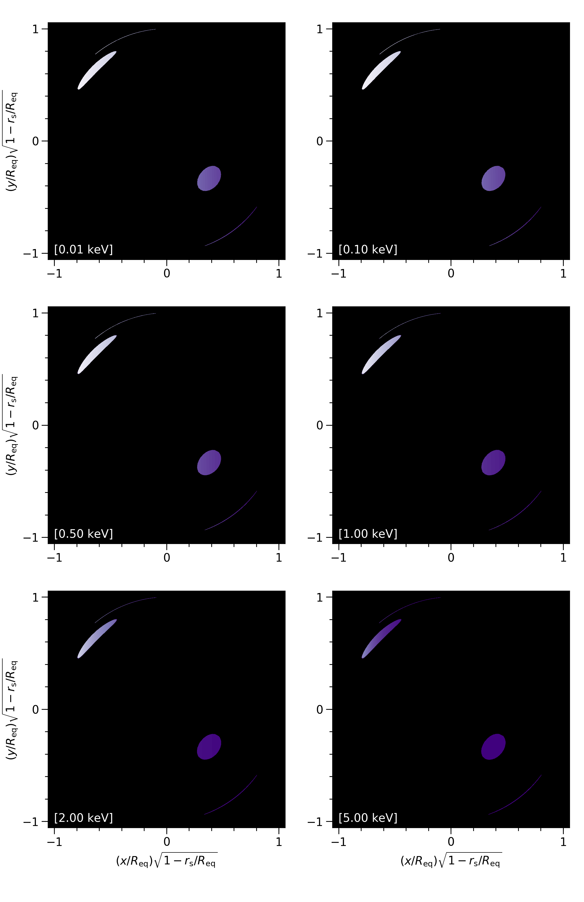
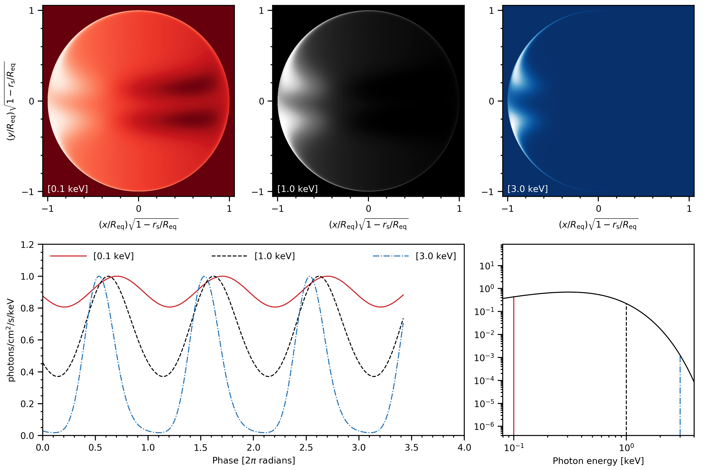
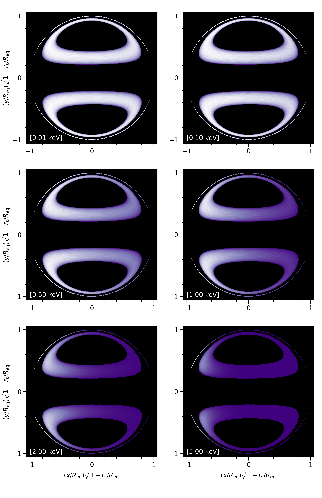

Photosphere
Instances of Photosphere represent a photosphere embedded
in an ambient Schwarzschild spacetime.
- class xpsi.Photosphere.Photosphere(hot=None, elsewhere=None, everywhere=None, bounds=None, values=None, stokes=False, custom=None, **kwargs)[source]
Bases:
ParameterSubspaceA photosphere embedded in an ambient Schwarzschild spacetime.
- Parameters:
hot (obj) – An instance of
HotRegion(or a derived class). This objects represents the hot regions of the surface that in most use-cases will be assumed to contain radiating material that is hotter than that elsewhere.elsewhere (obj) – An instance of
Elsewhere(or a derived class).everywhere (obj) – An instance of
Everywhere(or a derived class). Note that if you use construct the surface radiation field in this way, you should use thehot_atmosphereproperty to pass a buffer of numerical data to the integrator routines. You then need to ensure that the extension modulesxpsi/surface_radiation_field/hot_radiation_field.pyxandxpsi/surface_radiation_field/elsewhere_radiation_field.pyxmatch.
Note
You cannot specify the surface radiation field everywhere if you use hot regions (the latter usage may also include specification of the radiation field elsewhere).
- Parameters:
bounds (dict) – Bounds are supplied for instantiation of a frequency parameter. The parameter name
'mode_frequency'must be a key in the dictionary unless the parameter is fixed or derived. If a bound isNonethat bound is set equal to a strict hard-coded bound. IfNone, lock the coordinate rotation frequency of a mode of asymmetry in the photosphere to a fixed frequency, e.g., the stellar rotation frequency. If bounds are passed, the frequency is interpreted as a free parameter.values (dict) – Either the fixed value of the mode frequency, a callable if the frequency is derived, or a value upon initialisation if the frequency is free. The dictionary must have a key with name
'mode_frequency'if it is fixed or derived. If the asymmetry is locked to the stellar spin, then you need to pass the spin frequency. If fixed but different to the spin frequency, this value needs to be passed instead. In the hot region base class this mode frequency is applied to normalise the ray lags instead of the stellar rotation frequency.stokes (boolean) – A Boolean that determines whether the signals for all the Stokes I, Q, and U parameters are calculated. If False, only Stokes I is calculated.
custom (iterable) – A
Parameterinstance or iterable over such instances. Might be useful for calling image plane extensions and passing global variables, without having to instantiate surface-discretisation classes and without having to handle global variable values at compile time or from disk for runtime access.
Note
In basic modelling patterns the frequency is the spin frequency, and thus you only need to explicitly pass the spin as
valuewhilst leavingboundsto default. If the spin frequency happens to be a free parameter (perhaps with informative prior information), then pass a callable instead that can be used to get the spin frequency dynamically when the derived mode frequency variable is called for.- Required parameter names:
mode_frequency
- static _animate(_file_root, _num_frames, _figsize, _dpi, cycles=1, fps=None, **kwargs)[source]
Helper method to animate the intensity sky maps.
- Parameters:
_file_root (str) – Reserved for internal use.
_num_frames (int) – Reserved for internal use.
_figsize (int) – Reserved for internal use.
_dpi (int) – Reserved for internal use.
cycles (int) – Number of explicit cycles to generate frames for. The frames from the principal cycle are reused, so the images are periodic in their phase evolution. There is no delay between cycles in this type of repitition.
fps (int) – Frames per second. If
None, then one cycle (assuming images have been precomputed for a complete cycle), consisting of so many frames, will exhibit a period of one second.repeat (bool) – Inform ffmpeg to enter a loop when video play back commences. Deprecated.
repeat_delay – Delay between repeats in milliseconds. Deprecated.
ffmpeg_path (str) – Absolute path to ffmpeg executable. If
None, defaults to matplotlib rcParams settings, but no guarantee that the package will be found even if installed on system. Deprecated.
- _plot_sky_maps(_file_root, _phases, _energies, _c_idxs, _c_pidxs, _redraw, threads=1, with_pulse_profile_and_spectrum=False, time_is_space=False, panel_layout=None, panel_indices=None, cycles=1, phase_average=False, bolometric=False, energy_bounds=None, phase_bounds=None, num_levels=100, add_zero_intensity_level=True, normalise_each_panel=True, invert=False, annotate_energies=False, annotate_phases=False, energy_annotation_format='[%.1f keV]', phase_annotation_format='[%.1f cycles]', annotate_location=(0.05, 0.05), colormap=None, figsize=(10, 10), usetex=False, fontsize_scale=1.0, tick_spacing=(0.2, 1.0), tick_length_scaling=1.0, dpi_scale=1.0, **kwargs)[source]
Helper method for specific intensity sky map visualization.
Uses Delaunay triangulation to create an irregular sky mesh and calculate photon (specific) intensity contours at a sequence of phases.
Each figure generated contains a sequence of panels arranged in one or two spatial dimensions. Each panel is an intensity sky map, either at a particular energy or integrated over a finite energy interval. Panels cannot mix specific and integrated intensities. Only a some sequence of energy (intervals), in any order, can be identified as labelling panels in one or two spatial dimensions. Time (rotational phase), whilst it could be defined to label a sequence of panels, is only identified as a labelling a sequence of figures.
Similarly, sequence of energies could be identified as a variable labelling a sequence of figures, but is not. Moreover, energy and time could label panels in to spatial dimensions, but such mixing is not permitted. Finally, variables controlling the source-receiver system could be identified as labels of panels and/or figures, but this is also not supported. More complicated rendering patterns may be supported in future versions, but for now can be achieved via custom extensions building off of the current functionality.
- Parameters:
_file_root (str) – Relative or absolute path to parent directory for images, extended with the root name for the image files. E.g., the default is
./images/skymap. You do not need to change this unless you wish to, and is otherwise reserved for internal use. You may supply a custom file path via keywordsroot_dirandfile_rootupon callingimage(), which are concatenated appropriately._phases (ndarray[n]) – The phases at which the star was imaged. This is handled internally, so do not pass a keyword argument. If phase averaging, the minimum and maximum phases must be zero and \(2\pi\) radians (i.e., zero and one cycles).
_energies (ndarray[n]) – The energies at which the star was imaged. This is handled internally, so do not pass a keyword argument.
_c_idxs (ndarray[n]) – The energy indices for which the intensity maps were cached for memory-efficieny plotting. This is handled internally, so do not pass a keyword argument.
_c_pidxs (ndarray[n]) – The energy indices for which the intensity maps were cached for memory-efficieny plotting. This is handled internally, so do not pass a keyword argument.
_redraw (bool) – Redraw the sky maps? This is handled internally, so do not pass a keyword argument.
threads (int) – Number of OpenMP threads to spawn.
with_pulse_profile_and_spectrum (bool) – A setting that fundamentally changes some behaviours. If deactivated (the default), only photon (specific) intensity skymaps are plotted. The following frame is an example:

- Parameters:
with_pulse_profile_and_spectrum (bool) – If deactivated, the following keyword arguments do not have a use:
cyclesandcolormap. If activated, photon specific intensity skymaps at three energies are plotted in each frame, together with their associated photon specific flux pulse-profiles, and also the photon specific flux spectrum at a finer array of energies. Usepanel_indicesto select the energies. The pulse-profiles are each normalised to their respective maxima, and the spectrum shows the relative orders of magnitude of the specific flux signals. The following frame is an example:

- Parameters:
with_pulse_profile_and_spectrum (bool) – If activated, a subset of other keyword arguments are ignored:
energy_bounds,phase_average,panel_layout, andinvert. The panel layout is rigid (not customisable) in order to focus on the plot quality. If more energies were added, the information density in the plot-space might become too high without adding much more new information.time_is_space (bool) – Each image is at constant energy (or is a spectral trace up to that energy) instead of being at constant phase (or a pulse-profile trace up to that phase).
panel_layout (tuple[int,int]) – Two elements: the number of rows and columns of panels. If
None, a layout is automatically determined based on the number of images to be plotted.panel_indices (iterable) – These ordered integers will be used to select intensity information by indexing the energy dimension of a 3D intensity array. If specific intensites are plotted, these integers should index a subset of energies at which the star was imaged. If intensities are plotted, these integers should index a subset of the energy intervals over which specific intensities are integrated. See the
energy_boundskeyword argument. If the flux is calculated at more energies than specific intensities are cached at, then these integers need to index thecache_energy_indicesarray appropriately.cycles (int) – Nuber of cycles to generate images for. Only relevant if one cycle is different to the next in terms of the frame, e.g., most commonly if plotting the pulse-profile traces over more than one cycle. If frames separated by one cycle are identical, declare the number of cycles to the animator instead.
phase_average (bool) – Average each sky map over one revolution (cycle) in phase? Note that the resulting image is incompatible with the currently supported animation mode. The following image is an example:

- Parameters:
bolometric (bool) – Integrate each sky map over energy? Note that the resulting image is incompatible with the currently supported animation mode.
energy_bounds (iterable) – A set of two-element containers. Each container has an ordered pair of energies which delimit an integration domain. Specific intensity is integrated along each sky direction, at each phase, between these energy bounds. The bounds must be between the minimum and maximum energies at which the star was imaged. If
None, specific intensity sky maps will be plotted (the default). This option is ignored if energy is defined as the time dimension, meaning the sky maps are animated with respect to energy.phase_bounds (iterable) – A set of two-element containers. Each container has an ordered pair of energies which delimit an integration domain. Specific intensity is integrated along each sky direction, at each phase, between these energy bounds. The bounds must be between the minimum and maximum energies at which the star was imaged. If
None, specific intensity sky maps will be plotted (the default). This option is ignored if phase is defined as the time dimension, meaning the sky maps are animated with respect to phase.
Note
To use this functionality, the specific intensities must have been cached at all energies the specific flux is calculated at.
- Parameters:
num_levels (int) – Number of contour levels in (specific) intensity, distributed between minimum finite, and maximum values per panel, or over all panels. See
normalise_each_panelkeyword argument.add_zero_intensity_level (bool) – Add a contour level at zero intensity such that the colormap minimum corresponds to zero intensity? If
True(the default), then the background sky, where there is by definition zero model intensity, has the same colour only as the subset of the image of the surface that is not radiating in the model. The disadvantage of this choice is that the intensity structure of the image as a function of phase and sky direction is generally not as well- resolved by the colour and greyscale variation. In the limit that the minimum finite intensity of the image is far smaller than the maximum, then the intensity resolution by colour and greyscale values is highest. IfFalse, then the minimum colour is assigned to the minimum finite intensity as a function of phase and sky direction. This also maximally resolves the intensity by colour and greyscale values, which is useful for models wherein the surface radiation field is constructed, for instance, from uniform-temperature localised hot regions. However, in this case the background sky colour is undefined; the background sky colour is thus set to the minimum colour in the colormap, meaning that the fainest subset of the image over phase and sky direction merges with the background sky in terms of colour and greyscale values.normalise_each_panel (bool) – Normalise the contour colormap to each skymap panel uniquely, or globally over all panels? The former yields relative intensity as function of phase and sky direction for an energy or energy interval, whilst the latter offers more spectral information but emission in some panels may not be discernable.
invert (bool) – Invert the greyscale to show bright pixels as dark on a white plot background. If a colormap is manually supplied, this just controls the plot background colour. Inversion is recommended for printed format, whilst a black background is more intuitive when in digital format.
colormap (obj) – Usage dependent on other settings. If not plotting the pulse-profile and spectrum, then this is simply a (matplotlib) colormap object. Choose something appropriate and accessible for a non-negative scalar field (sky intensities). If plotting the pulse-profile and spectrum too, then
colormapcan be the string'RedGreyBlue'to invoke the default colour scheme which is reds for the lowest energy intensity skymap and pulse-profile; pure greyscale for the intermediate energy; and blues for the highest energy. Alternatively, ifcolormapis simplyNone, the default greyscale will be used for all energies, with all pulse-profiles in black. Lastly, you can supply a three-element list or tuple of colormap objects, ordered from lowest to highest energy; the pulse-profile line colours will be retrieved as the midpoint of the colormap. Note that the background sky colour will be set to the lowest colour in each colourmap.figsize (tuple(int,int)) – The figure size (width, height) in inches. If the dimensions are inconsistent with the aspect ratio suggested by the :obj`panel_layout` settings, the height of the figure will be automatically rescaled to achieve congruence, meaning each panel is approximately square.
usetex (bool) – Use TeX backend for figure text.
fontsize_scale (float) – Use this argument to scale the font size of figure text relative to the default font size that is automatically determined based on the approximate panel size, which is in turn based on the figure size and the panel layout.
tick_spacing (tuple[float,float]) – A two-element container. The first element is the minor tick spacing, and the second is the major tick spacing, for both the \(x\) and \(y\) directions on the image plane. The units are both the maximum possible angular size of the image of the surface in an ambient Schwarzschild spacetime, \(R_{\rm eq}/\sqrt{1-r_{\rm s}/R_{\rm eq}}\).
tick_length_scaling (float) – Use this argument to scale the axis tick lengths relative to the default lengths that are automatically determined based on the panel size.
dpi_scale (float) – Use this argument to scale the dots per inch of the figure, relative to the default that is automatically determined based on the panel size.
- property elsewhere_atmosphere
Get the numerical atmosphere buffers for elsewhere if used.
To preload a numerical atmosphere into a buffer, subclass and overwrite the setter. The underscore attribute set by the setter must be an \(n\)-tuple whose \(n^{th}\) element is an \((n-1)\)-dimensional array flattened into a one-dimensional
numpy.ndarray. The first \(n-1\) elements of the \(n\)-tuple must each be an ordered one-dimensionalnumpy.ndarrayof parameter values for the purpose of multi-dimensional interpolation in the \(n^{th}\) buffer. The first \(n-1\) elements must be ordered to match the index arithmetic applied to the \(n^{th}\) buffer. An example would beself._hot_atmosphere = (logT, logg, mu, logE, buf), where:logTis a logarithm of local comoving effective temperature;loggis a logarithm of effective surface gravity;muis the cosine of the angle from the local surface normal;logEis a logarithm of the photon energy; andbufis a one-dimensional buffer of intensities of size given by the product of sizes of the first \(n-1\) tuple elements.It is highly recommended that buffer preloading is used, instead of loading from disk in the customisable radiation field extension module, to avoid reading from disk for every signal (likelihood) evaluation. This can be a non-negligible waste of compute resources. By preloading in Python, the memory is allocated and references to that memory are not in general deleted until a sampling script exits and the kernel stops. The likelihood callback accesses the same memory upon each call without I/O.
- embed(fast_total_counts, threads)[source]
Embed the photosphere in an ambient Schwarzschild spacetime.
In other words, generate a discrete representation of the photospheric radiation field and the null mapping from the photosphere to infinity, for use in flux integrators called by distant observers.
- property everywhere
Get the instance of
Everywhere.
- property global_variables
Get a vector of global surface radiation field variables.
- Returns:
An ndarray[n] of scalars required to evaluate variables that control the radiation field w.r.t local comoving frames across the stellar surface.
The following code block is how one would pass the properties of a single-temperature circular
HotRegionto the extension modules. If you have more than oneHotRegionobject merged into the subspace associated with thePhotosphereobject, they may each be prefixed, meaning that the set of parameter names below would need to be prefixed at the least, and unless you only want to image oneHotRegion, the parameters of theHotRegionsobject are required.return _np.array([self['super_colatitude'], self['phase_shift'] * _2pi, self['super_radius'], self['super_temperature']])
The phase shift controls the initial rotational phase of the
HotRegionwhen imaging commences.
- property hot_atmosphere
Get the numerical atmosphere buffers for hot regions if used.
To preload a numerical atmosphere into a buffer, subclass and overwrite the setter. The underscore attribute set by the setter must be an \(n\)-tuple whose \(n^{th}\) element is an \((n-1)\)-dimensional array flattened into a one-dimensional
numpy.ndarray. The first \(n-1\) elements of the \(n\)-tuple must each be an ordered one-dimensionalnumpy.ndarrayof parameter values for the purpose of multi-dimensional interpolation in the \(n^{th}\) buffer. The first \(n-1\) elements must be ordered to match the index arithmetic applied to the \(n^{th}\) buffer. An example would beself._hot_atmosphere = (logT, logg, mu, logE, buf), where:logTis a logarithm of local comoving effective temperature;loggis a logarithm of effective surface gravity;muis the cosine of the angle from the local surface normal;logEis a logarithm of the photon energy; andbufis a one-dimensional buffer of intensities of size given by the product of sizes of the first \(n-1\) tuple elements.It is highly recommended that buffer preloading is used, instead of loading from disk in the customisable radiation field extension module, to avoid reading from disk for every signal (likelihood) evaluation. This can be a non-negligible waste of compute resources. By preloading in Python, the memory is allocated and references to that memory are not in general deleted until a sampling script exits and the kernel stops. The likelihood callback accesses the same memory upon each call without I/O.
- image(reimage=False, reuse_ray_map=True, energies=None, num_phases=None, phases=None, phases_in_cycles=False, sqrt_num_rays=100, epsabs_ray=1e-12, epsrel_ray=1e-12, max_steps=100000, init_step=0.1, image_plane_radial_increment_power=0.5, threads=1, cache_intensities=False, cache_energy_indices=None, cache_phase_indices=None, single_precision_intensities=True, plot_sky_maps=False, sky_map_kwargs=None, animate_sky_maps=False, free_memory=True, atm_ext='BB', animate_kwargs=None, **kwargs)[source]
Image the star as a function of phase and energy.
- Parameters:
reimage (bool) – (Re)image the star. If
False, but the spacetime configuration has been updated or the photosphere parameters have been updated, a warning will be generated. In principle, one might want to plot sky maps using cached imaging information, or animate sky maps using images on disk, so reimaging is not forced if (non-fixed) parameters have been changed.reuse_ray_map (bool) – Reuse a precomputed ray map from the stellar surface to the image plane. If the spacetime configuration has changed (non-fixed parameters have changed), a cached ray map will not be reused. If the spacetime configuration is unchanged, but resolution settings have changed for ray tracing, pass
Falseto adhere to the new resolution settings.energies (ndarray[n]) – Energies in keV to evaluate incident specific intensities at.
num_phases (int) – The number of phases spanning the unit interval (zero and unity inclusive) to image at.
phases (ndarray[m]) – Phases in radians or cycles at which to evaluate incident specific intensities at. If not
None, takes precedence overnum_phases. The units need to be specified with thephases_in_cycleskeyword argument: ifFalse, give the phase array in radians.phases_in_cycles (bool) – Is the phase array, if not
None, in units of rotational cycles?sqrt_num_rays (int) – Square-root of the number of rays. This is the level of discretisation in both a radial coordinate and a polar coordinate on an elliptical image plane.
Note
When the spacetime is static or extremely close to being static in a numerical context, at the resolutions we are interested in, we need to mitigate problems with rays that graze the pole infinitesimally close to the polar axis. In the vicinity of the polar coordinate singularity the ODE system is stiff and the solution is unstable. The most straightforward way to mitigate this is to perform a fallback forward Euler step for a ray that passes exactly through the pole, and use that ray as an approximation for the grazing ray that started very nearby on the image plane. Internally, if a ray intersects the image plane at \(x\)-coordinate that is numerically very close to, but not exactly, zero (which would mean alignment to the rotational axis), it is approximated by a ray that intersects \(x=0\). Image-plane interpolation of quantities (such as intensity) for the purpose of visualisation will then smooth out any such artefacts.
Moreover, as an additional measure against artefacts in the sky maps in the vicinity of the rotational pole, rays are distributed accordingingly. For example, if we request \(n=400\) rays per dimension, a maximal spacing of the rays from the rotational axis is achieved by rotating the spokes of rays (by up to \(\pm\pi/n\)) so that no spoke is aligned (or anti-aligned) with the \(y\)-direction.
- Parameters:
epsabs_ray (float) – Absolute error tolerance per ray to adhere to during numerical integration.
epsrel_ray (float) – Relative error tolerance per ray to adhere to during numerical integration.
max_steps (int) – Maximum number of steps to permit per ray before forced termination of integration.
init_step (float) – The initial suggested step size at the image plane for the affine parameter for each ray.
image_plane_radial_increment_power (float) – Controls the behaviour of the radial discretisation. Higher values towards unity result in linear spacing of rays with the radial coordinate. Lower values towards zero squeeze the rays towards the visible stellar limb, which is necessary for resolving images of extended radiating elements. Values above unity are not recommended, and would squeeze rays towards the image-plane origin, compromising resolution at the stellar limb.
threads (int) – Number of OpenMP threads to spawn for parallel blocks of code. Parallel blocks include ray integration to generate a global ray map from image plane to surface; and image calculation at a sequence of rotational phases.
cache_intensities (float) – Cache the photon specific intensity sky maps in memory, as a function of phase and energy? The type must be a float (greater than or equal to zero) or
False. The value represents the limiting size in GB that can be allocated for the intensity cache. Defaults to zero because this dominates memory consumption. You need to activate this option if you want to plot the sky maps (see below). To activate, supply a limit. A hard limit of 2 GB is imposed for safety. To override, use the secret_OVERRIDE_MEM_LIMkeyword argument to supply a positive limit in GB.cache_phase_indices (ndarray[m]) – A one-dimensional
numpy.ndarrayofdtype=numpy.int32, specifying the phase-array indices to cache intensities at. This is useful to save memory when you want to plot specific intensity skymaps but also compute the specific flux at many more phases. IfNone, intensities will be cached at all phases subject to memory constraints. Note that the order of the list matters for plotting order, so the indices should generally increase, as should the phases themselves. If plotting the pulse-profile and spectrum, then this is a case where many more phases are useful for the resolving specific flux pulse-profile than are needed to plot specific intensity skymaps and specific flux spectra at three representative phases.cache_energy_indices (ndarray[m]) – A one-dimensional
numpy.ndarrayofdtype=numpy.int32, specifying the energy-array indices to cache intensities at. This is useful to save memory when you want to plot specific intensity skymaps but also compute the specific flux at many more energies. IfNone, intensities will be cached at all energies subject to memory constraints. Note that the order of the list matters for plotting order, so the indices should generally increase, as should the energies themselves. If plotting the pulse-profile and spectrum, then this is a case where many more energies are useful for the resolving specific flux spectrum than are needed to plot specific intensity skymaps and specific flux pulse-profiles at three representative energies.single_precision_intensities (bool) – Cache the intensities in single precision? In most use cases, double precision is simply unnecessary, and because memory consumption can be high, choosing single precision can reduce memory requirements by a factor of two. Note that this only applies to the caching of intensities, not the calculation of intensities, which is done safely in double precision; only the final caching operation is a demotion cast to single precision. The default is single precision caching. Option ignored if intensities are not cached.
plot_sky_maps (bool) – Plot (specific) intensity sky maps at a sequence of phases, or by averaging over phase. Maps can be made at one more energies or energy intervals. The images will be written to disk and can be used as frames in an animated sequence.
sky_map_kwargs (dict) – Dictionary of keyword arguments passed to
_plot_sky_maps(). Refer to the associated method docstring for available options.animate_sky_maps (bool) – Compile images from disk into an animated sequence.
free_memory (bool) – Try to free the imaging information before animating a sequence of sky maps written to disk, to try to avoid high memory usage. For safety the default is to free the memory, so deactivate this at your own risk. If there are other non-weak references created to the underlying objects, the memory may fail to be freed. In the methods below, the aim is that the native garbage collection cleans up the references because they only exist in the method local scope (no closures or globals).
Note
Memory used for plotting the sky maps and loading the images from disk to animate a phase sequence might not be straightforwardly freed despite efforts to do so, because of non-weak references covertly held by the matplotlib module.
- Parameters:
atm_ext (str) – Used to determine which atmospheric extension to use. Options at the moment: “BB”: Analytical blackbody “Num4D”: Numerical atmosphere using 4D-interpolation from the provided atmosphere data “user”: A user-provided extension which can be set up by replacing the contents of the file hot_user.pyx (and elsewhere_user.pyx if needed) and re-installing X-PSI (if not changed, “user” is the same as “BB”).
animate_kwargs (dict) – Dictionary of keyword arguments passed to
_animate(). Refer to the associated method docstring for available options.deactivate_all_verbosity (bool) – Deactivate the verbose output? Note that despite this keyword argument not appearing in the method signature, it is a valid switch.
- property images
Get the precomputed image information.
- integrate(energies, threads)[source]
Integrate over the photospheric radiation field.
- Parameters:
energies – A one-dimensional
numpy.ndarrayof energies in keV.threads (int) – Number of
OpenMPthreads to spawn for signal integration.stokes (bool) – If activated, a full Stokes vector is computed and stored in signal, signalQ, and signalU.
- load_image_data(directory)[source]
Load imaging data from disk.
- Parameters:
directory (str) – Path to directory to load files from. Should contain files written to disk by
write_image_data().
- property signal
Get the stored signal (Stokes I).
- Returns:
A tuple of tuples of ndarray[m,n]. Here \(m\) is the number of energies, and \(n\) is the number of phases. Units are photon/s/keV; the distance is a fast parameter so the areal units are not yet factored in. If the signal is a spectrum because the signal is time-invariant, then \(n=1\).
- property signalQ
Get the stored Stokes Q signal.
- Returns:
A tuple of tuples of ndarray[m,n]. Here \(m\) is the number of energies, and \(n\) is the number of phases. Units are photon/s/keV; the distance is a fast parameter so the areal units are not yet factored in. If the signal is a spectrum because the signal is time-invariant, then \(n=1\).
- property signalU
Get the stored Stokes U signal.
- Returns:
A tuple of tuples of ndarray[m,n]. Here \(m\) is the number of energies, and \(n\) is the number of phases. Units are photon/s/keV; the distance is a fast parameter so the areal units are not yet factored in. If the signal is a spectrum because the signal is time-invariant, then \(n=1\).